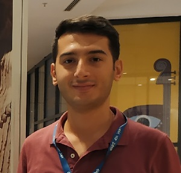

|
Oğuzhan Fatih Kar
I am a second year M.S. student in electrical engineering at Middle East Technical University, where I am working with Figen S. Oktem. I got my undergraduate degree in electrical engineering at the same department.
I am interested in compressed sensing, computational imaging, optimization, and deep learning. My current work focuses on techniques and models for compressive diffractive spectral imaging using photon sieves.
Email /
CV /
Google Scholar /
LinkedIn
|

|
|
A performance analysis on the optimal number of measurements for coded compressive imaging
O.F. Kar, A. Gungor, S. Ilbey, C.B. Top, H.E. Guven
IEEE GLOBALSIP, 2018
|
|
A matrix-free reconstruction method for compressive focal plane array imaging
A. Gungor, O.F. Kar, H.E. Guven
IEEE ICIP, 2018
|
|
Compressive photon-sieve spectral imaging
O.F. Kar, U. Kamaci, F.C. Akyon, F.S. Oktem
OSA COSI, 2018
|
|
An efficient parallel algorithm for single-pixel and FPA imaging
O.F. Kar, A. Gungor, S. Ilbey, H.E. Guven
SPIE DCS, 2018
|
|
Effect of different sparsity priors on compressive photon-sieve spectral imaging
O.F. Kar, U. Kamaci, F.C. Akyon, F.S. Oktem
IEEE SIU, 2018
|
|
An adaptive relaxed alternating direction method of multipliers for compressive focal plane array imaging
O.F. Kar, A. Gungor, H.E. Guven
IEEE SIU, 2018
|
|